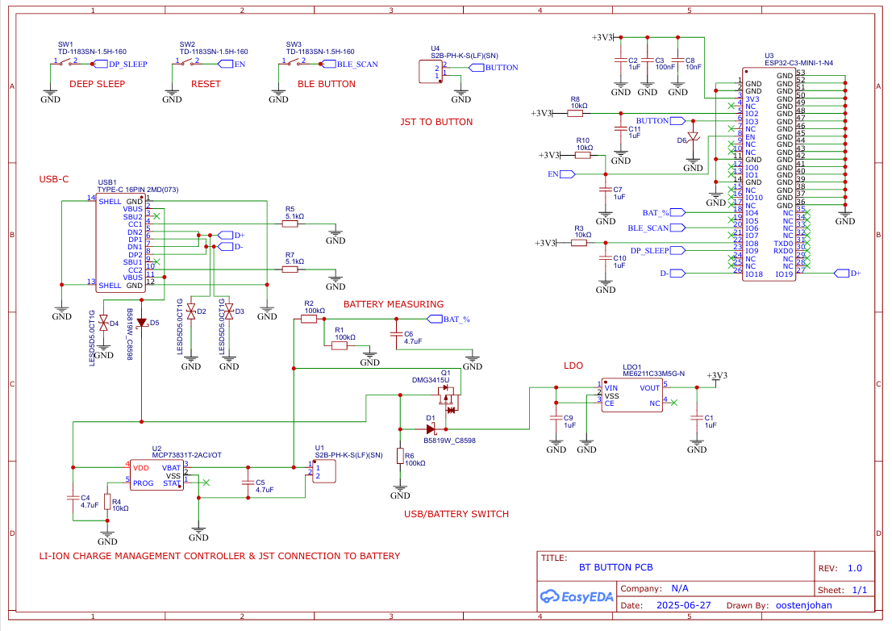
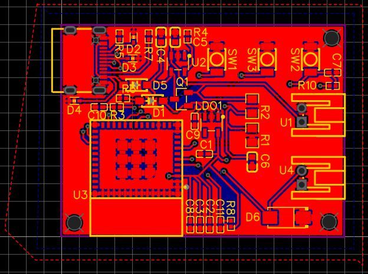
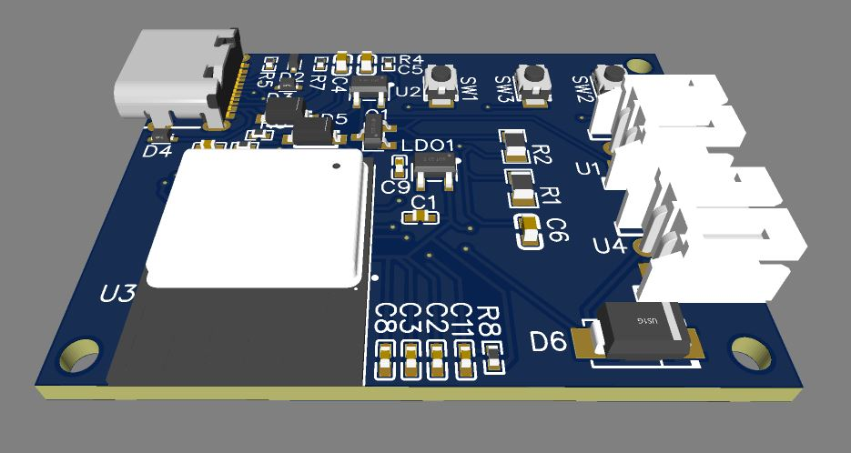
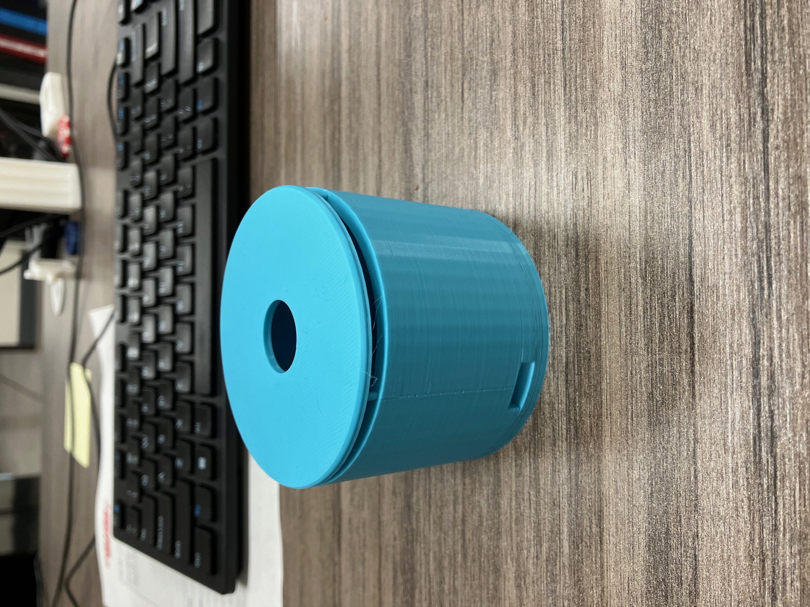
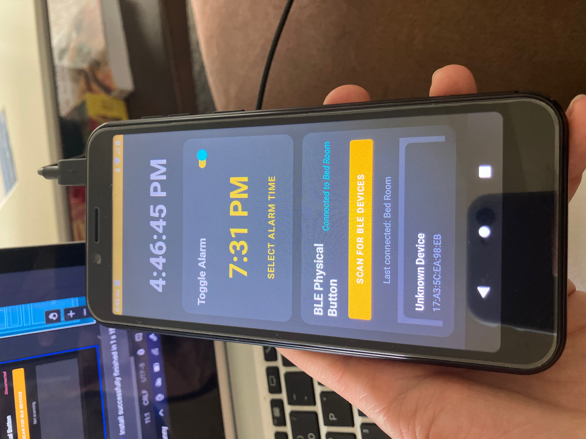
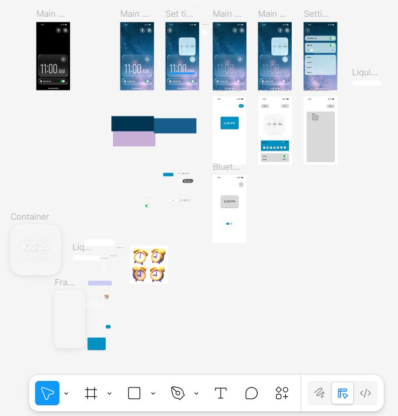

← Back to Projects
ESP32 Alarm Device with Companion App
ESP32
PCB Design
Mobile Development
Bluetooth Low Energy & WiFi
3D Printing
Expo/React Native
Technical Specifications
Hardware
- Microcontroller: ESP32-C3-MINI-1-N4
- Power System: 3.7V Li-Ion battery with USB-C charging
- Battery Life: 3 months (deep sleep mode)
- User Interface: Mechanical switch, LED indicator, speaker
- Connectivity: WiFi, Bluetooth Low Energy 5.0
- Enclosure: Custom 3D-printed PLA housing
Software
- Mobile Platforms: iOS and Android via Expo
- Communication: Bluetooth Low Energy
- Development Tools: VS Code, Figma
- Prototyping: Android Studio (Kotlin)
Project Overview
This device works in conjunction with a custom iOS app that allows the user to set an alarm on their phone with various settings. The device connects through Bluetooth Low Energy (BLE) to the user's phone and saves the alarm time. The device is connected to wifi to obtain current NPT time and emits an alarm when the current time matches the set alarm time. The device is controlled using a custom built PCB with an integrated USB-C charging circuit powered by a 3.7V Li-Po battery, boasting 3 months of battery life with the use of the ESP32s deep sleep capabilities.
The Problem
Right out of college, I began working for the military as a civilian. My new life as an engineer started at 6 AM, and I was wholly unprepared for this new schedule. To make sure I woke up on time, I started a habit of setting my alarm on my phone and leaving it across the room, forcing myself to physically get up to turn it off. This worked great until I installed Bluetooth-controlled lights in my bedroom and realized I wanted my phone at my bedside to control the lights, but still wanted an alarm across the room to maintain my morning routine.
Rather than purchase a separate alarm clock, I decided to commit to learning the world of electronics and programming by building an ESP32-based device with an accompanying mobile app. This project would solve my annoyance while providing valuable experience in hardware design, AI use, and mobile app development. Over the course of 9 months of weekend work, this project evolved from a simple concept into a fully functional device that expanded my engineering capabilities far beyond my mechanical engineering background.
Technical Development
Hardware Design and Iteration
The initial prototype utilized an ESP32 development board coupled with an external voltage regulator IC. This approach quickly revealed significant limitations: the development board's footprint was unnecessarily large for the required functionality, and the voltage regulator generated excessive heat while producing electrical noise that substantially reduced battery efficiency.
I transitioned to designing a custom PCB centered around the ESP32-C3-MINI-1-N4 microcontroller. This chip provided the essential WiFi and Bluetooth Low Energy capabilities while allowing for a significantly reduced form factor. The custom PCB design incorporated:
- Integrated battery charging circuit with USB-C connectivity
- 3.7V Li-Ion battery support with power management
- Optimized component layout minimizing the device footprint to essential I/O: one speaker connection, one LED indicator, and two mechanical tactile switch
- Deep sleep implementation achieving 3-month battery life on a single charge

Complete PCB schematic showing ESP32, power management, and I/O connections

PCB layout optimized for compact form factor and minimal electromagnetic interference

3D rendering of the custom PCB with component placement visualization
The mechanical enclosure went through multiple design iterations in CAD before 3D printing. The final design houses all components in a compact form factor while maintaining accessibility for the USB-C charging port and providing satisfying tactile feedback through a mechanical keyboard-style switch. The LED provides visual confirmation of user interaction and device status.

Early prototype enclosure design - testing form factor and button placement
Software Development and AI Integration
As a mechanical engineer developing my first mobile application, I leveraged AI as a development partner throughout the software creation process. This required developing proficiency in prompt engineering—learning to provide comprehensive context, clear objectives, and maintaining a collaborative dialogue with AI tools. Each development session involved detailed requirement specifications and iterative refinement, transforming AI from a basic tool into an effective programming collaborator.
The development process began with a proof-of-concept Android application built in Kotlin, chosen for Android's more accessible development environment. This prototype validated the communication architecture: the ESP32 functioning as a BLE client while the mobile app operated as the server. After confirming successful bidirectional communication, I proceeded with cross-platform development.

First functional Android app prototype built in Kotlin - proof of concept for BLE communication
The original design was intended to trigger an alarm from the phone, however I ran into a number of iOS restrictions. iOS kills background apps in order to save on battery, it can send notifications but it cannot perform operations such as an alarm while idle, this would also restrict the ability of the bluetooth connection. If the app is not open and active it will not connect to designated bluetooth devices. iOS also highly restricts the usage of the phones alarm system as Apple intends its users to use the native alarm app. There are ways around these restrictions but the path is extensive and complicated and I decided it would be unlikely my coding abilities would be sufficient.
I pivoted and designed the app to immedietly send the alarm information to the device and allow the device to make the alarm. This circumvents the restriction on bluetooth and still allows the user to set an alarm using their phone will in bed, and still forcing the user to get out of bed to press the button to stop the alarm. The initial design concepts were storyboarded in Figma and recreated in Expo

Figma storyboard mapping out user flows and interface design before development

Completed iOS App allowing for BLE connectivety to the device and alarm settings
The production application utilized:
- Figma for UI/UX design and storyboarding
- Visual Studio Code with Expo framework for cross-platform development
- Bluetooth Low Energy for device communication
- Real-time configuration updates pushed to the device
Project Impact
While the end product is a glorified alarm clock, the journey provided invaluable experience. The project demystified previously opaque technologies—PCB design, AI, and mobile app development all became practical tools rather than theoretical concepts. Working with AI as a development partner required developing new communication and problem-solving strategies that have proven valuable across other technical challenges and my everyday life.
This project directly influenced my approach to automation at my current facility. Leveraging the confidence gained from this independent project, I successfully proposed and implemented a pump test loop automation system using PID control. This system allows technicians to input desired flow rates, with the PID controller automatically modulating valve actuators to achieve and maintain target values.
The alarm device represents the first of many hardware projects. Each minor annoyance now presents a potential project, with the knowledge that something simple has an entire world of complexity behind it.
Key Learnings
- PCB Design: Transitioned from using development boards to designing custom PCBs, understanding component selection, power management, and signal integrity
- Mobile Development: Built first mobile application from scratch, learning cross-platform development with Expo and React Native
- AI Collaboration: Developed effective prompt engineering skills to leverage AI as a programming partner
- System Architecture: Learned to navigate platform restrictions and design resilient systems that work within constraints
- Full-Stack Integration: Gained experience connecting hardware, and mobile applications into a cohesive product
The finished product - compact, functional, and solving a real everyday problem